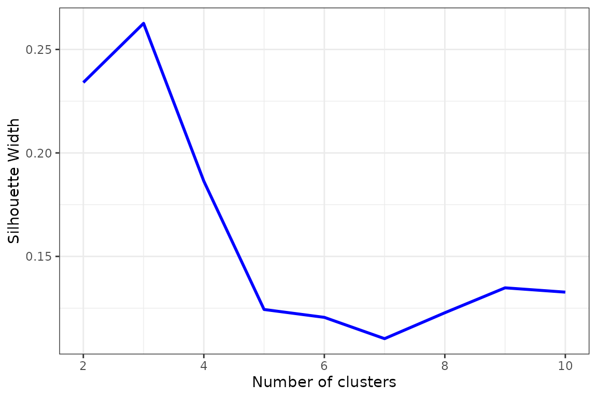
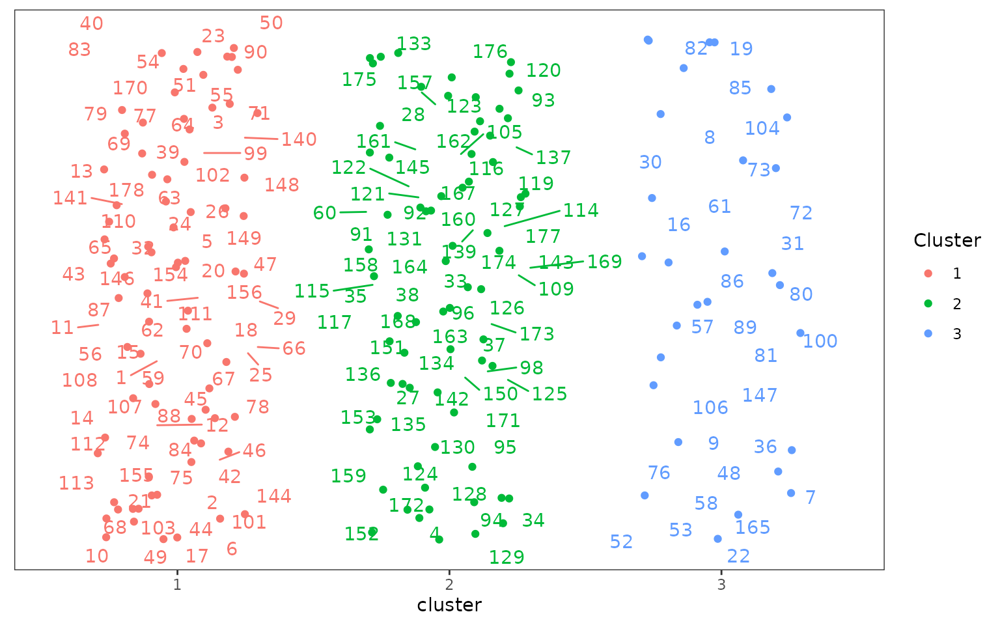
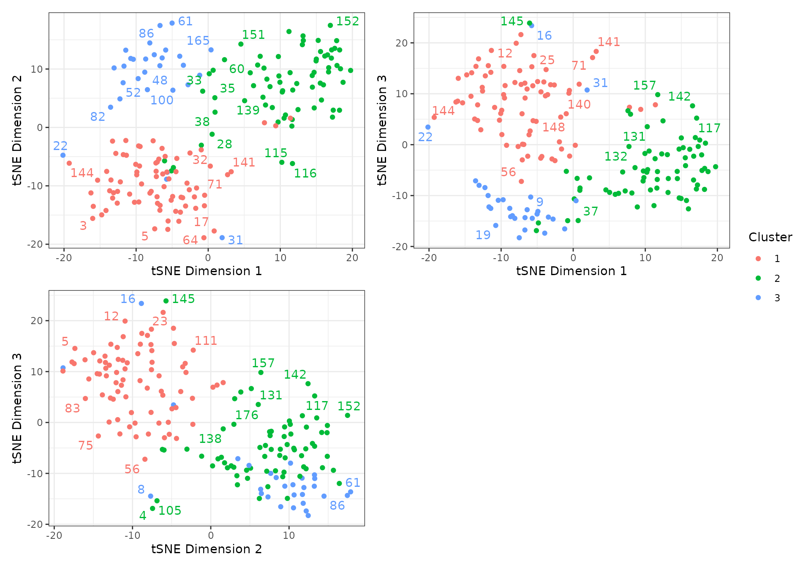

This vignette explains how to conduct automated morphological character partitioning as a pre-processing step for clock (time-calibrated) Bayesian phylogenetic analysis of morphological data, as introduced by Simões and Pierce (2021).
Character Partitioning
Load the EvoPhylo package
1. Generate distance matrix
Generate a Gower distance matrix with get_gower_dist() by supplying the file path of a .nex file containing a character data matrix:
#Load a character data matrix and produce a Gower distance matrix
dist_matrix <- get_gower_dist("DataMatrix.nex", numeric = FALSE)Below, we use the example data matrix characters that accompanies EvoPhylo.
data(characters)
dist_matrix <- get_gower_dist(characters, numeric = FALSE)2. Estimate the optimal number of partitions
The optimal number of partitions (clusters) will be first determined using partitioning around medoids (PAM) with Silhouette widths index (Si) using get_sil_widths(). The latter will estimate the quality of each PAM cluster proposal relative to other potential clusters.
## Estimate and plot number of cluster against silhouette width
sw <- get_sil_widths(dist_matrix, max.k = 10)
plot(sw, color = "blue", size = 1)
Decide on number of clusters based on plot; here, \(k = 3\) partitions appears optimal.
3. Simple Workflow:
3.1. Analyze clusters with PAM under chosen \(k\) value (from Si) with make_clusters().
3.2. Produce simple cluster graph
3.3. Export clusters/partitions to Nexus file with cluster_to_nexus().
## Generate and vizualize clusters with PAM under chosen k value.
clusters <- make_clusters(dist_matrix, k = 3)
plot(clusters)
## Write clusters to Nexus file
cluster_to_nexus(clusters, file = "Clusters_Nexus.txt")4. Complete Workflow:
4.1. Analyze clusters with PAM under chosen \(k\) value (from Si) with make_clusters().
4.2. Produce a graphic clustering (tSNEs), coloring data points according to PAM clusters, to independently verify PAM clustering. This is set with the tsne argument within make_clusters().
4.3. Export clusters/partitions to Nexus file with cluster_to_nexus(). This can be copied and pasted into the Mr. Bayes command block.
#User may also generate clusters with PAM and produce a graphic clustering (tSNEs)
clusters <- make_clusters(dist_matrix, k = 3, tsne = TRUE, tsne_dim = 3)
plot(clusters, nrow = 2, max.overlaps = 5)
#Write clusters/partitions in Nexus file format
cluster_to_nexus(clusters, file = "Clusters_Nexus.txt")References
Simões, Tiago R., and Stephanie E. Pierce. 2021. “Sustained High Rates of Morphological Evolution During the Rise of Tetrapods.” Nature Ecology & Evolution 5 (10): 1403–14. https://doi.org/10.1038/s41559-021-01532-x.